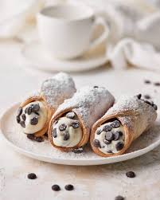

Cannoli

Dish Description
This recipe brings the authentic taste of Sicily into your kitchen, featuring a crisp, golden-brown pastry shell filled with a signature sweet cream. The contrast between the crunchy, fried shell and the velvety richness of the ricotta cheese filling creates a sophisticated dessert experience that has been cherished for generations. By focusing on high-quality ingredients like whole-milk ricotta, a touch of cinnamon, and a hint of vanilla, you can achieve a bakery-standard result that perfectly balances sweetness with a delicate hint of spice.
Beyond the impressive flavor profile, mastering the cannoli is a rewarding project that highlights the importance of texture and timing. Just as you are learning to carefully layer your code and organize your project directories, this dessert requires a structured approach—from chilling the dough to the final dusting of confectioners' sugar. It is a decadent and impressive centerpiece for your collection, representing the kind of detail and consistency that transforms simple pantry staples into a world-class dessert.
Ingredients
- Shells:
- 3 cups all-purpose flour
- ¼ cup white sugar
- ¼ teaspoon ground cinnamon
- 3 tablespoons shortening
- ½ cup sweet Marsala wine
- 2 tablespoons water
- 1 tablespoon distilled white vinegar
- 1 large egg
- 1 egg yolk
- 1 egg white
- 1 quart oil for frying, or as needed
- Filling:
- 1 (32 ounce) container ricotta cheese, drained
- ½ cup confectioners' sugar
- 4 ounces semisweet chocolate, chopped (Optional)
- 1 teaspoon grated lemon zest, or to taste
Steps
- Gather all ingredients.
- To make the shells: Mix flour, sugar, and cinnamon in a medium bowl. Cut in shortening until pieces are the size of small peas. Stir in Marsala wine, water, and vinegar until a stiff dough forms.
- Knead dough on a lightly floured surface until smooth, about 10 minutes. Wrap in plastic wrap and refrigerate for 1 to 2 hours.
- To make the filling: Mix ricotta, confectioners' sugar, and lemon zest in a medium bowl until smooth. Fold in chocolate chips if using. Cover and refrigerate until ready to use.
- Heat oil in a deep-fryer or large heavy saucepan to 360 degrees F (182 degrees C).
- Roll dough out as thin as possible on a floured surface. Cut into 4-inch circles. Wrap each circle around a cannoli tube, sealing the edge with a bit of egg white.
- Fry shells in the hot oil until golden brown, about 1 to 2 minutes. Carefully remove from the oil and let cool slightly before sliding the shell off the tube. Cool completely.
- Pipe the filling into the cooled shells just before serving. Dust with additional confectioners' sugar if desired.
Home